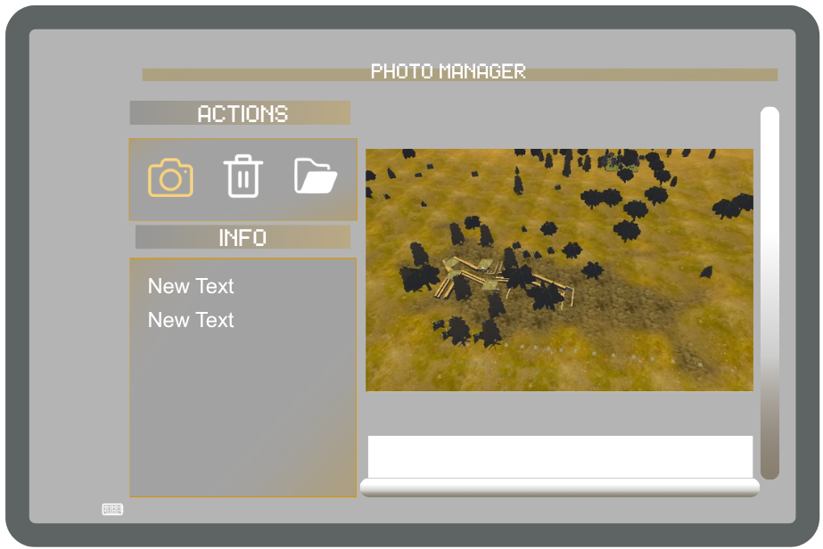
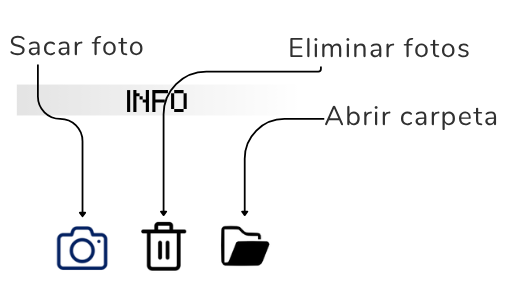
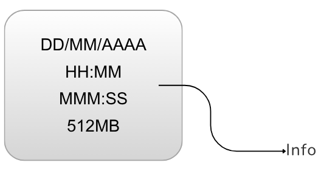
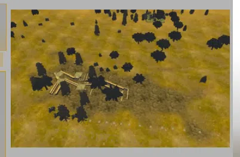

Foto / Photo Manager
Guía de consulta basada en el manual original. Las páginas del PDF se abren en otra pestaña y las capturas pueden consultarse sin perder tu lugar.
PÁGINA 156 Panel de configuración - Foto



Ver recorte anterior de la página (referencia)

Panel de configuración - Foto
El panel de fotos sirve para capturar imágenes de la cámara principal del dron
PHOTO MANAGER
ACTIONS
Photo
INFO
New Text
New Text
Las imágenes capturadas se guardan en un panel tipo scroll que puede desplazarse con el dedo. La cantidad de imágenes es limitada simulando una memoria SD, de esta manera el educando tendrá que formar su capacidad de discernimiento para saber cuándo es el momento ideal para realizar una fotografía. Estas imágenes se guardan en el sistema de manera temporal y pueden ser vistas en el momento o al abrir la aplicación nuevamente. No se pueden extraer mediante el USB-C
Sacar foto Eliminar fotos
INFO
Abrir carpeta
Panel Scroll: Permite almacenar las fotos de manera lineal, con el dedo índice se desplazan como en los celulares, al presionar en el centro de estas se abren en grande y para salir presionar el botón rojo de cerrar
Sacar Foto: Este botón al pulsarlo captura una nueva foto
DD/MM/AAAA
Eliminar fotos: Este botón al pulsarlo elimina todas las fotos
HH:MM
MMM:SS
512MB
Info: Muestra la fecha y hora de cada fotografía así como su peso y MB disponibles
Info
Ruta de guardado (Se puede descargar al conectar el Meta Quest a la PC): Android/data/com.CYSSA.DroneWarfare/files/Photos